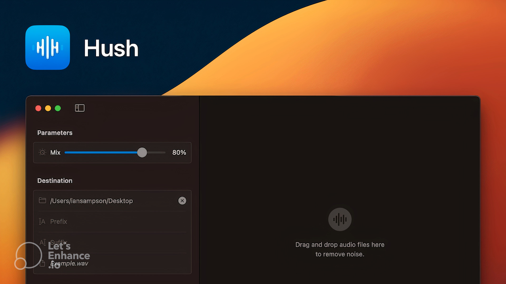

Go Home
Go Back
Runs on Apple’s Neural Engine
Hush is a new noise reduction application created by independent programmer, writer and musician Ian Sampson. One of the first professional audio applications capable of running on the Neural Engine found in Apple Silicon-powered Mac computers, Hush is designed to reduce background noise and reverb from spoken word recordings.
Capable of filtering out broadband noise from sources such as ventilation, appliances, wind and traffic, Hush allows creators of media such as voiceovers, podcasts and audiobooks to clean up noisy recordings, promising to deliver studio-quality results. Reduction of the effects of room reflections and comb filtering is on offer, with users able to adjust how much reverberation is left in the processed recording. Sounds with transients can also be targeted, with the application capable of tackling noises such as chirping birds, barking dogs and car horns.
Files can be processed individually or loaded in batches, allowing users to quickly treat groups of files or stems from multi-track recordings and have them all exported to a target folder. On computers equipped with Apple Silicon processors, the application utilises Apple’s Neural Engine, a energy-efficient sub-processor dedicated to machine learning tasks, resulting in fast working speeds (hour-long files can be processed in minutes) and low temperates whilst keeping the CPU itself free for other tasks and applications.
Published 22/3/23
Music Category
Reference: https://www.soundonsound.com/news/hush-noise-reduction-mac-app-released